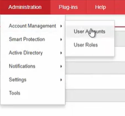

Ad user Addition from active directory:
1)

2) Clique Add
3)Coloca essas configs e clique em next

4) Seleciona tudo e clica em next

5) Voce faz uma seleção dependendo do que vc quer que o usuário faça e clica em Finish

6)
Faz o login pra ver se deu certo